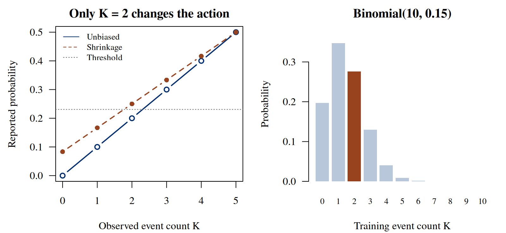
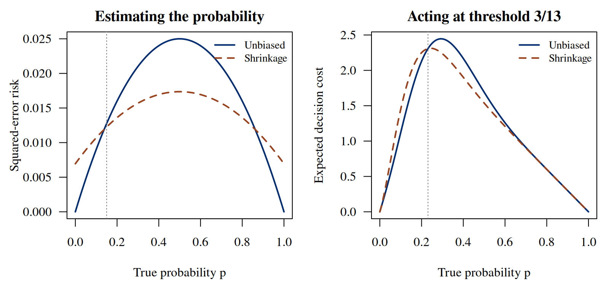

Notes on Statistical Inference
Chapter 4. Can a better estimate lead to a worse decision?
An estimator can be better at estimating a probability and worse at choosing an action. To compare them, we need to say what “better” means. Squared error asks how far a reported probability is from the truth. A decision loss asks what happens when that report changes an action. The first comparison averages the size of numerical errors; the second may care almost entirely about errors near one threshold.
This chapter develops one small experiment far enough that every comparison can be checked without an asymptotic approximation. The same two estimates will be evaluated as parameter estimates, predictions for a new outcome, scores on reused training outcomes, and inputs to a binary policy. We will also change the averaging distribution, from a fixed true probability to a prior over probabilities. Following each change of expectation lets us see which comparisons survive and which require a new calculation.
The regression chapter separated coefficient estimates from fitted probabilities. We now return to the independent Bernoulli model from the first two chapters to compare two procedures under explicit losses. Keeping that model small lets us calculate the bias, variance and expected loss of each rule exactly; it does not replace the conditional targets introduced by regression. A fresh binary outcome and a decision with specified costs add two different uses of the estimate. The action is a classification choice; evaluating a treatment that changes the outcome would require a causal model as well as a loss function.
4.1 One experiment, several questions
Let be independent Bernoulli variables with common probability , and let . Initially is fixed, although unknown to the analyst. Repeating the experiment generates a new training sample and hence a new . Consider (4.1) The subscript denotes the unbiased sample proportion. The subscript denotes shrinkage toward one half. Both are functions of observable data; neither uses the unknown . Shrinkage is stronger for smaller samples and prevents reports exactly equal to zero or one.
We distinguish a reported probability from an action . A rule maps the observed sample to a report or an action; its risk is expected loss under a specified distribution. Thus an assertion of superiority must identify the target, loss, comparison class, and expectation. Here our main comparison class contains just the two rules in (4.1); we make no claim of optimality among every possible rule.
For the numerical example set and . The analyst does not know that value; it is the fixed data-generating value used to evaluate repeated-sampling performance. In the script, the count distribution and the two reports are constructed directly:
Run the complete R example
Dependencies: base R. This complete block includes the data, setup and calculations. Run it in a fresh R session. Short code excerpts above explain individual steps; this block supplies their shared setup. Figures and tables are written to a temporary directory.
Complete R example
# Complete R example. Synthetic data; no external files are required.
local({
previous.directory <- getwd()
example.directory <- tempfile("biomedical-example-")
dir.create(example.directory)
setwd(example.directory)
on.exit(setwd(previous.directory))
dir.create("generated",showWarnings=FALSE)
# exact estimation, prediction, and decision comparisons.
out <- "generated"; out.dir <- out
dir.create(out,recursive=TRUE,showWarnings=FALSE)
n <- 10L
p <- 0.15
c.fp <- 3
c.fn <- 10
threshold <- c.fp / (c.fp + c.fn)
k <- 0:n
w <- dbinom(k, size = n, prob = p)
q.u <- k / n
q.s <- (k + 1) / (n + 2)
# Integer comparisons implement action 0 on an exact threshold tie.
a.u <- as.integer((c.fp + c.fn) * k > c.fp * n)
a.s <- as.integer((c.fp + c.fn) * (k + 1) > c.fp * (n + 2))
stopifnot(identical(which(a.u != a.s) - 1L, 2L))
stopifnot(identical(a.u, as.integer(q.u > threshold)))
stopifnot(identical(a.s, as.integer(q.s > threshold)))
# Analytic risks and independent finite-sum evaluations.
v <- p * (1 - p)
mse.u <- v / n
mse.s <- (n * v + (1 - 2 * p)^2) / (n + 2)^2
fresh.u <- v + mse.u
fresh.s <- v + mse.s
train.u <- fresh.u - 2 * v / n
train.s <- fresh.s - 2 * v / (n + 2)
cost.given.k <- function(action) {
c.fp * (1 - p) * action + c.fn * p * (1 - action)
}
cost.u <- sum(w * cost.given.k(a.u))
cost.s <- sum(w * cost.given.k(a.s))
cost.diff <- (c.fp - (c.fp + c.fn) * p) * dbinom(2, n, p)
stopifnot(abs(sum(w) - 1) < 1e-12)
stopifnot(abs(sum(w * (q.u - p)^2) - mse.u) < 1e-12)
stopifnot(abs(sum(w * (q.s - p)^2) - mse.s) < 1e-12)
stopifnot(abs(cost.s - cost.u - cost.diff) < 1e-12)
stopifnot(abs(sum(w * (p * (1-q.s)^2 + (1-p)*q.s^2)) - fresh.s) < 1e-12)
stopifnot(abs(sum(w * ((k/n)*(1-q.s)^2 + (1-k/n)*q.s^2)) - train.s) < 1e-12)
# Enumerate every binary training vector, not only the binomial count.
x <- as.matrix(expand.grid(rep(list(0:1), n)))
counts <- rowSums(x)
sequence.weights <- p^counts * (1 - p)^(n - counts)
qs.all <- (counts + 1) / (n + 2)
observed.brier <- rowMeans((x - qs.all)^2)
stopifnot(abs(sum(sequence.weights) - 1) < 1e-12)
stopifnot(abs(sum(sequence.weights * observed.brier) - train.s) < 1e-12)
stopifnot(abs(sum(sequence.weights * (qs.all - x[, 1])^2) - train.s) < 1e-12)
exact <- data.frame(
rule = c("Unbiased", "Shrinkage"),
mse = c(mse.u, mse.s), fresh.brier = c(fresh.u, fresh.s),
reused.brier = c(train.u, train.s),
optimism = c(2 * v / n, 2 * v / (n + 2)),
action.probability = c(sum(w * a.u), sum(w * a.s)),
decision.cost = c(cost.u, cost.s)
)
write.csv(exact, file.path(out, "ch03-exact.csv"), row.names = FALSE)
states <- data.frame(k, probability = w, q.u, q.s, a.u, a.s,
cost.u = cost.given.k(a.u), cost.s = cost.given.k(a.s))
write.csv(states, file.path(out, "ch03-states.csv"), row.names = FALSE)
# A fixed prior is used only for these explicitly prior-averaged checks.
prior.mse.u <- integrate(function(z) z * (1-z) / n, 0, 1)$value
prior.mse.s <- integrate(function(z) (n*z*(1-z)+(1-2*z)^2)/(n+2)^2, 0, 1)$value
prior.policy <- function(a) {
mean(c.fp * (1 - q.s) * a + c.fn * q.s * (1 - a))
}
stopifnot(abs(prior.mse.u - 1/(6*n)) < 1e-12)
stopifnot(abs(prior.mse.s - 1/(6*(n+2))) < 1e-12)
prior.cost.u <- prior.policy(a.u)
prior.cost.s <- prior.policy(a.s)
stopifnot(abs(prior.cost.s - prior.cost.u + 1/44) < 1e-12)
# Paired Monte Carlo: both procedures see the same K and fresh Y.
RNGkind("Mersenne-Twister", "Inversion", "Rejection")
set.seed(20261004)
B <- 200000L
km <- rbinom(B, n, p)
ym <- rbinom(B, 1L, p)
qum <- km/n
qsm <- (km+1)/(n+2)
aum <- as.integer((c.fp+c.fn)*km > c.fp*n)
asm <- as.integer((c.fp+c.fn)*(km+1) > c.fp*(n+2))
cost <- function(a, y) c.fp*a*(1-y) + c.fn*(1-a)*y
paired <- cbind(
MSE = (qsm-p)^2 - (qum-p)^2,
Fresh.Brier = (qsm-ym)^2 - (qum-ym)^2,
Reused.Brier = (km/n)*((1-qsm)^2-(1-qum)^2) +
(1-km/n)*(qsm^2-qum^2),
Decision.cost = cost(asm, ym) - cost(aum, ym)
)
truth <- c(mse.s-mse.u, fresh.s-fresh.u, train.s-train.u, cost.s-cost.u)
mc <- data.frame(metric = colnames(paired), exact.difference = truth,
estimate = colMeans(paired),
mcse = apply(paired, 2, sd)/sqrt(B),
replications = B)
mc$standardized.error <- (mc$estimate - mc$exact.difference)/mc$mcse
# Exact variance of paired realized decision-cost difference.
mass.two <- dbinom(2, n, p)
delta.var <- mass.two * (c.fp^2*(1-p)+c.fn^2*p) - cost.diff^2
stopifnot(delta.var > 0)
mc$exact.mcse <- c(NA_real_, NA_real_, NA_real_, sqrt(delta.var/B))
write.csv(mc, file.path(out, "ch03-monte-carlo.csv"), row.names = FALSE)
latex.table <- function(file, spec, header, rows) {
writeLines(c(paste0("\\begin{tabular}{", spec, "}"), "\\toprule",
paste0(paste(header, collapse=" & "), " \\\\"),
"\\midrule", rows, "\\bottomrule", "\\end{tabular}"), file)
}
fmt <- function(x) sprintf("%.8f", x)
exact.rows <- vapply(seq_len(nrow(exact)), function(i) {
paste0(paste(c(exact$rule[i], fmt(exact$mse[i]), fmt(exact$fresh.brier[i]),
fmt(exact$reused.brier[i]), fmt(exact$decision.cost[i])),
collapse=" & "), " \\\\")
}, character(1))
latex.table(file.path(out,"ch03-exact.tex"), "lrrrr",
c("Rule", "MSE", "Fresh Brier", "Reused Brier", "Decision cost"), exact.rows)
mc.rows <- vapply(seq_len(nrow(mc)), function(i) {
metric <- gsub("_", " ", mc$metric[i], fixed=TRUE)
paste0(paste(c(metric, fmt(mc$exact.difference[i]), fmt(mc$estimate[i]),
fmt(mc$mcse[i])), collapse=" & "), " \\\\")
}, character(1))
latex.table(file.path(out,"ch03-monte-carlo.tex"), "lrrr",
c("Metric", "Exact", "Simulation", "MCSE"), mc.rows)
grid <- seq(0, 1, length.out=1001L)
r.u <- grid*(1-grid)/n
r.s <- (n*grid*(1-grid)+(1-2*grid)^2)/(n+2)^2
d.u <- vapply(grid, function(z) sum(dbinom(k,n,z)*
(c.fp*(1-z)*a.u+c.fn*z*(1-a.u))), numeric(1))
d.s <- vapply(grid, function(z) sum(dbinom(k,n,z)*
(c.fp*(1-z)*a.s+c.fn*z*(1-a.s))), numeric(1))
grid.result <- data.frame(p=grid, mse.u=r.u, mse.s=r.s,
decision.u=d.u, decision.s=d.s)
write.csv(grid.result, file.path(out,"ch03-risk-curves.csv"), row.names=FALSE)
blue <- "#002D72"
rust <- "#98421E"
draw.risks <- function() {
par(mfrow=c(1,2), mar=c(4.1,4.4,2.1,0.8), las=1, family="serif")
matplot(grid,cbind(r.u,r.s),type="l",lty=c(1,2),lwd=2,
col=c(blue,rust),xlab="True probability p",ylab="Squared-error risk",
main="Estimating the probability")
abline(v=p,lty=3,col="gray50")
legend("topright",c("Unbiased", "Shrinkage"),lty=c(1,2),
col=c(blue,rust),lwd=2,bty="n",cex=.86)
matplot(grid,cbind(d.u,d.s),type="l",lty=c(1,2),lwd=2,
col=c(blue,rust),xlab="True probability p",ylab="Expected decision cost",
main="Acting at threshold 3/13")
abline(v=threshold,lty=3,col="gray50")
legend("topright",c("Unbiased", "Shrinkage"),lty=c(1,2),
col=c(blue,rust),lwd=2,bty="n",cex=.86)
}
draw.boundary <- function() {
par(mfrow=c(1,2), mar=c(4.1,4.4,2.1,0.8), las=1, family="serif")
use <- 0:5
matplot(use,cbind(q.u[use+1],q.s[use+1]),type="b",pch=c(1,16),
lty=c(1,2),lwd=1.8,col=c(blue,rust),xlab="Observed event count K",
ylab="Reported probability",main="Only K = 2 changes the action")
abline(h=threshold,lty=3,col="gray40")
legend("topleft",c("Unbiased", "Shrinkage", "Threshold"),
lty=c(1,2,3),col=c(blue,rust,"gray40"),bty="n",cex=.82)
barplot(w,names.arg=k,col=ifelse(k==2,rust,"#B8C7D9"),border=NA,
ylim=c(0,max(w)*1.12),cex.names=.8,
xlab="Training event count K",ylab="Probability",main="Binomial(10, 0.15)")
}
for (name in c("risks", "boundary")) {
fun <- if (name=="risks") draw.risks else draw.boundary
pdf(file.path(out,paste0("ch03-",name,".pdf")),width=8,height=3.7,
useDingbats=FALSE)
fun(); dev.off()
png(file.path(out,paste0("ch03-",name,".png")),width=1600,height=740,res=200)
fun(); dev.off()
}
capture.output(sessionInfo(),file=file.path(out,"ch03-session-info.txt"))
print(exact,digits=10)
print(mc,digits=7)
cat("\nSelected numerical results\n")
for (candidate in c("reader", "summary", "summary.mc", "perf", "comparison", "route.comparison", "test", "tab", "exact", "workflow.ci", "coef.tab", "evaluation.table")) {
if (exists(candidate, inherits=FALSE)) {
value <- get(candidate, inherits=FALSE)
if (is.data.frame(value) || is.matrix(value)) { cat(candidate, "\n"); print(utils::head(value,8)) }
}
}
cat("R", as.character(getRversion()), "\n")
})
This excerpt shows a step inside the preceding complete R example; it uses that block’s data and setup.
n <- 10L
p <- 0.15
c.fp <- 3
c.fn <- 10
threshold <- c.fp / (c.fp + c.fn)
k <- 0:n
w <- dbinom(k, size = n, prob = p)
q.u <- k / n
q.s <- (k + 1) / (n + 2)This is a homogeneous population model: there are no covariates and every training subject and future subject shares the same event probability. That restriction lets us isolate estimation from action. In a heterogeneous population, both prediction error and decision cost would additionally average over the covariate distribution. A claim about one common probability should not silently become a claim about calibration in subgroups or the value of individualized treatment.
4.2 Squared-error risk and the bias–variance tradeoff
Under squared-error loss, frequentist risk is (4.2) To see the second equality, write , square, and take expectations. The cross term vanishes because . This calculation assumes a finite second moment, which both bounded reports have.
Since and , the sample proportion has zero bias and variance . For the shrinkage rule, (4.3, 4.4) Its bias is positive below one half, negative above one half, and zero at one half. Its variance is always smaller than that of for . Smaller variance alone does not settle the MSE comparison, because the squared bias must be included: (4.5)
At , these risks are and . The improvement is real but small. It is also local in the parameter space. Subtraction, using , gives (4.6) Shrinkage wins precisely when . At the improvement interval is approximately . At , by contrast, certainly and has zero error, whereas has positive error. Therefore shrinkage does not dominate the sample proportion under squared error over the full parameter space.
There is no conflict with a minimum-variance-unbiased theorem. Such a theorem compares unbiased estimators; is generally outside that class. Nor does the existence of a complete sufficient count make every function of the count optimal for every loss. The qualification “of its expected value” in the Lehmann–Scheffé formulation matters.
4.3 Prediction for an independent outcome
Squared error has compared the reports with the unknown probability. We next compare the same reports with an outcome that has not yet occurred. Now introduce a fresh outcome , independent of the training sample at fixed . Use to predict and score the prediction by the Brier loss . Conditioning on the training count fixes the report, so (4.7) A further expectation over yields (4.8) The first term is outcome variation even if were known. The second is the cost of estimating it. Because the first term is identical for both rules, the MSE ordering transfers exactly to fresh-outcome Brier risk in this experiment. At the chosen , the Brier risks are and .
Independence is doing substantive work. We conditioned on training data while leaving the outcome distribution Bernoulli. This describes a new exchangeable individual under the model, not a subject selected according to their outcome and not a later population with a different event probability. The decomposition is a statement about that evaluation design; it does not establish a universal ranking under distribution change.
For a fixed report, (4.7) also explains strict propriety: the expected score is uniquely minimized at . But our reports fluctuate with the training sample. Propriety supplies a target, while repeated-sampling risk compares how two procedures approach that target. Neither statement says that converting each report into a discontinuous action preserves its ordering under a different loss. We need both statements: propriety identifies the probability target, while risk evaluates a procedure for estimating it.
4.4 Why reusing an outcome changes the answer
Suppose instead that the report is scored against the observations used to calculate it. Write and define the training-average score (4.9) The identity follows by expanding the square, using , and collecting terms. For every realized sample, minimizes this score over all constant reports. Consequently always looks at least as good as on the data it summarized. This is an optimization fact, not independent evidence of better prediction.
We can quantify the optimism rather than merely warn about it. For any report , expansion of the fresh and training expectations gives (4.10) For these affine rules the covariance is positive: the observed success count increases both the fitted report and the outcomes used to judge it. Since , the optimism is for and for .
The expected reused scores are therefore and , respectively. The reused score favors , although the fresh score favors . Shrinkage reduces the degree of optimism as well as changing the report. Reporting only the smaller training score would conceal both facts. Scoring one fixed training observation has the same expectation here by exchangeability; it remains dependent evaluation.
The following check enumerates all training sequences. It verifies the weighted training-average score without relying only on a count-level formula. The vector of reports is subtracted from each column of the observation matrix, so every row is scored against its own report.
This excerpt shows a step inside the preceding complete R example; it uses that block’s data and setup.
# Enumerate every binary training vector, not only the binomial count.
x <- as.matrix(expand.grid(rep(list(0:1), n)))
counts <- rowSums(x)
sequence.weights <- p^counts * (1 - p)^(n - counts)
qs.all <- (counts + 1) / (n + 2)
observed.brier <- rowMeans((x - qs.all)^2)
stopifnot(abs(sum(sequence.weights) - 1) < 1e-12)
stopifnot(abs(sum(sequence.weights * observed.brier) - train.s) < 1e-12)
stopifnot(abs(sum(sequence.weights * (qs.all - x[, 1])^2) - train.s) < 1e-12)4.5 A threshold policy and its actual cost
Let action 1 mean making a positive decision. A false positive costs 3 and a false negative costs 10, with zero cost for either correct decision: (4.11) These are illustrative units, not clinical utilities. If a probability is used in the calculation, the expected costs of actions 1 and 0 are and . Action 1 is strictly preferred when (4.12) We adopt action 0 at equality. Either action minimizes the calculated cost at an exact tie, but fixing the convention makes a policy reproducible.
For , is equivalent to , whereas is equivalent to . Their actions differ only at : the reports are and , on opposite sides of . Neither report ever equals the threshold in this sample size. Integer inequalities implement the policy without using a rounded decimal threshold:
This excerpt shows a step inside the preceding complete R example; it uses that block’s data and setup.
# Integer comparisons implement action 0 on an exact threshold tie.
a.u <- as.integer((c.fp + c.fn) * k > c.fp * n)
a.s <- as.integer((c.fp + c.fn) * (k + 1) > c.fp * (n + 2))
stopifnot(identical(which(a.u != a.s) - 1L, 2L))
stopifnot(identical(a.u, as.integer(q.u > threshold)))
stopifnot(identical(a.s, as.integer(q.s > threshold)))

Actual performance must be evaluated under the true , not under the report that selected the action. For a policy , independence of and gives (4.13) At , action 1 costs in expectation and action 0 costs . Thus unnecessary positive decisions cost an extra each on average. Let be the two threshold policies. Their exact difference is (4.14) Here , yielding an increase of . The action probabilities are and , and the costs are and .
The explanation is specific: shrinkage moves this disagreement state upward across a threshold that exceeds the true probability. Numerical errors away from the threshold still contribute to MSE but cannot change the action. For shrinkage increases this policy’s cost; for it decreases cost. At the threshold the true expected costs tie. Figure 4.2 compares these different risk functions.
There are two distinct sources of variation in this calculation. Whether occurs depends on the training sample. Conditional on that count, a new nonevent makes the shrinkage policy worse by 3, while a new event makes it better by 10. At , these possibilities have probabilities and , giving the conditional average . The expectation does not assert that shrinkage loses on every realized subject. It states that the losses average unfavorably across repeated subjects and training samples.


| Rule | MSE | Fresh Brier | Reused Brier | Decision cost |
|---|---|---|---|---|
| Unbiased | 0.01275000 | 0.14025000 | 0.11475000 | 1.68879370 |
| Shrinkage | 0.01225694 | 0.13975694 | 0.11850694 | 1.97848519 |
4.6 A Bayes rule is not a pointwise guarantee
The same shrinkage report has a Bayesian interpretation. Put a fixed prior on . Multiplying its density by the binomial likelihood gives , whose mean is . For a proposed report , posterior squared-error loss decomposes as (4.15) Thus the posterior mean minimizes posterior expected squared error. It is not the definition of a Bayes action for every loss; an absolute-error loss instead leads to a posterior median. Posterior expected loss is the general principle.
Under the specified prior-predictive model, . Thresholding consequently minimizes posterior expected loss (4.11) too. This conclusion and the fixed- cost increase are simultaneously correct. One expectation averages over the stated posterior; the other evaluates training samples and new outcomes at .
Integrating (4.5) over the uniform prior gives for and for . The prior-averaged decision costs at are and , favoring the shrinkage policy by . For the decision cost, the prior-predictive count distribution is uniform on . The policies differ only at , where the posterior predictive event probability is . Choosing action 1 then costs , rather than for action 0. The shrinkage policy saves in that state; weighting it by the state probability gives the saving . A Bayes improvement is therefore a prior-weighted improvement, not a claim at every parameter value. Calling the uniform prior “uninformative” does not remove its effect near a decision boundary. Estimating prior parameters or introducing a hierarchy changes the procedure again. The fixed-prior calculation here does not justify silently treating a prior fitted from these outcomes as if it had been specified beforehand. Chapter 8 develops posterior inference under a stated model and prior.
4.7 Exact calculations and paired simulation
The complete R example evaluates all eleven count states, checks the analytic equalities numerically, and produces the figures and tables. It also simulates 200,000 independent training-count/new-outcome pairs with seed 20261004. Both procedures use the same pair in each replication. For paired loss differences , the Monte Carlo standard error is (4.16) This quantifies simulation error in the estimated expectation, not uncertainty about a fitted probability for a particular dataset. Pairing retains the covariance between procedures. Adding separate marginal variance estimates would discard that information.
One can instead integrate out the new outcome and simulate only the conditional cost given . That estimator has the same expectation but a smaller Monte Carlo variance; its error bar must be calculated from its own replication values. Similarly, many validation subjects evaluated with one training sample are not independent training replications. A simulation should repeat the entire experiment when its target averages over refitting, or clearly state that it conditions on the fitted rule. Here exact enumeration makes such distinctions visible and avoids choosing a simulation size merely to obtain a desired result.
This excerpt shows a step inside the preceding complete R example; it uses that block’s data and setup.
paired <- cbind(
MSE = (qsm-p)^2 - (qum-p)^2,
Fresh.Brier = (qsm-ym)^2 - (qum-ym)^2,
Reused.Brier = (km/n)*((1-qsm)^2-(1-qum)^2) +
(1-km/n)*(qsm^2-qum^2),
Decision.cost = cost(asm, ym) - cost(aum, ym)
)
truth <- c(mse.s-mse.u, fresh.s-fresh.u, train.s-train.u, cost.s-cost.u)
mc <- data.frame(metric = colnames(paired), exact.difference = truth,
estimate = colMeans(paired),
mcse = apply(paired, 2, sd)/sqrt(B),
replications = B)| Metric | Exact | Simulation | MCSE |
|---|---|---|---|
| MSE | -0.00049306 | -0.00045982 | 0.00002242 |
| Fresh Brier | -0.00049306 | -0.00053177 | 0.00010045 |
| Reused Brier | 0.00375694 | 0.00374976 | 0.00000455 |
| Decision cost | 0.28969149 | 0.28553500 | 0.00556806 |
We now have three distinct comparisons. Smaller variance need not mean smaller squared-error risk, because bias also contributes. A proper score identifies the true probability as the optimal report under its outcome model; it does not rank every estimated policy under a different loss. And a score computed on the training outcomes evaluates a different experiment from prediction for a fresh person.
For each comparison, we first identify the outcome, loss, and averaging distribution. At , this calculation gives a precise conclusion: shrinkage improves MSE and fresh Brier risk while increasing the cost of the specified policy. To evaluate another action, we would need its consequences and loss rather than transfer this ordering unchanged.
Exact sums were possible because the experiment had only eleven count states. When exact sampling calculations become difficult, a limit argument can approximate an estimator’s error distribution. The next chapter returns to the sample proportion and asks what consistency and a normal approximation each establish as the sample size grows.
Explore: the loss changes the comparison
Keep the same two estimators and the same binomial experiment. Before revealing the result, predict whether shrinkage lowers squared error, expected decision cost, both, or neither. The calculation below enumerates all eleven possible counts; it is not a simulation.
Make your prediction first. Which counts will lead the two rules to choose different actions?
| Rule | MSE | Fresh Brier risk | Decision cost |
|---|
Static counterpart: the chapter’s exact-risk table, threshold derivation, and risk-curve figure. The numerical illustration evaluates hypothetical policies, not a clinical intervention.
4.8 Exercises
Shrinking a probability estimate. Let , , . Compare and for estimating under squared-error loss. Derive each bias, variance, and risk; find the exact set of at which has smaller risk. Use a boundary parameter to determine whether it dominates on the full parameter space.
A fresh outcome has its own target. For the same training count , let be independent of , with . For a report , derive the expected Brier loss in terms of , the squared-error risk for , and bias for . Explain why the MSE ordering for transfers when but need not transfer when . Give the sign of the loss difference for at .
Costs determine the threshold and its ties. Let a fresh binary outcome have report , and define loss , with and . Choose action zero when expected costs tie. Derive the threshold and the smallest integer count leading to action one under . Specialize to , and determine the action for at .
A smaller numerical error can give a larger action cost. Fix and the loss and tie convention of the preceding exercise with . Let the fresh outcome and training data be independent at the same . Derive the expected cost difference between thresholding and thresholding . Find the parameter interval where shrinkage has smaller MSE but larger action cost. At , explain why a zero expected difference does not mean identical realized losses.